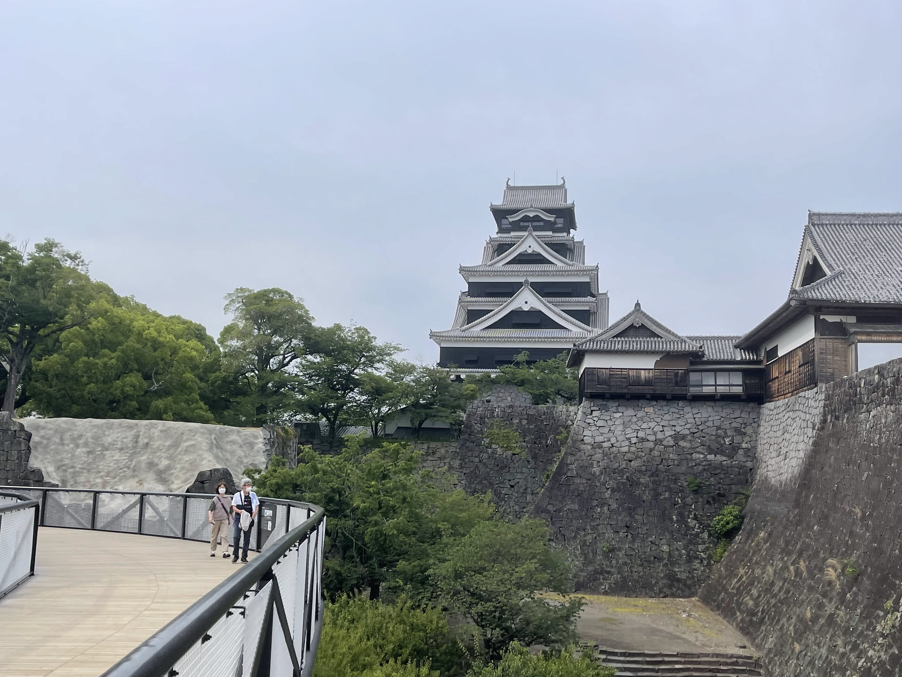
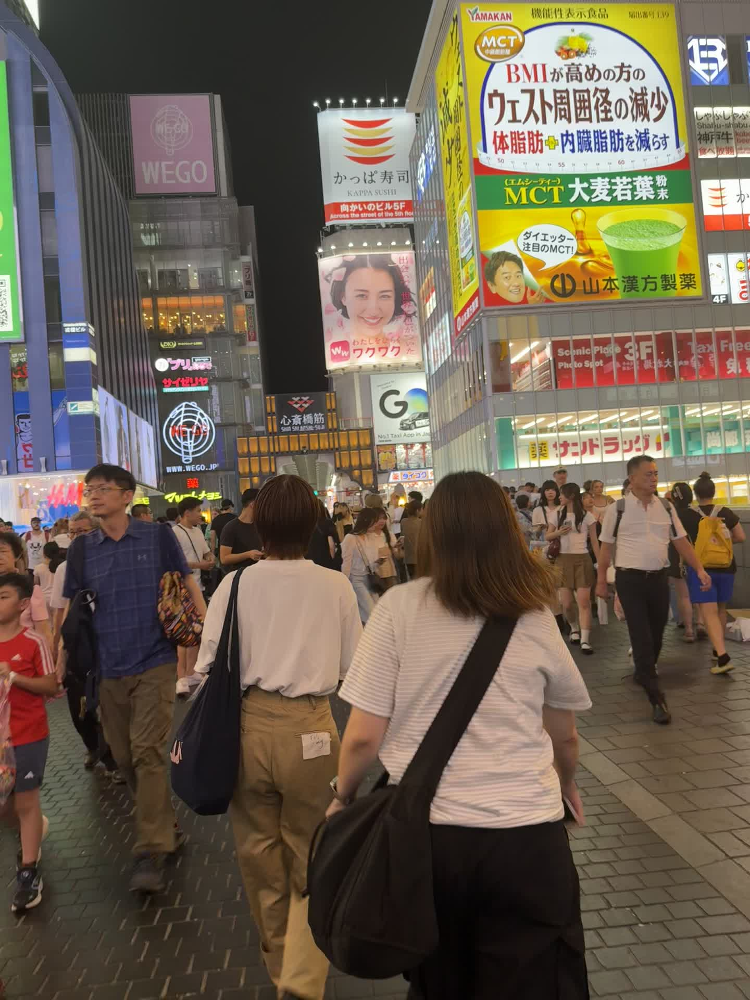
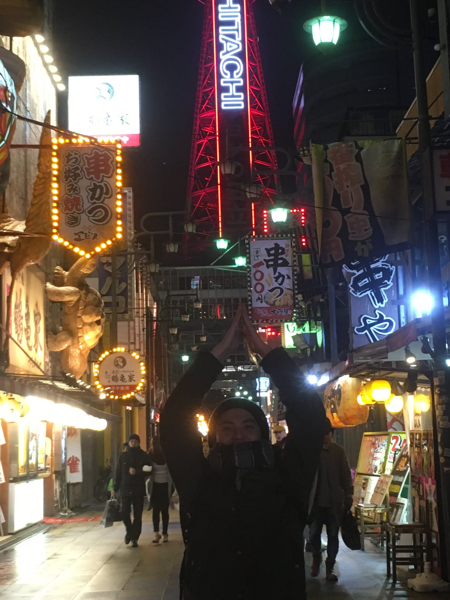

01 · USED MANGA & TOYS
MANDARAKE GRAND CHAOS
12:00–20:00Den Den Town's Mandarake: floors of second-hand manga, figures and toys. If you collect, this is the one to dig through.
Nipponbashi 4-12-6, Den Den Town



Tap a pin or a card — everything opens in Google Maps.
Den Den Town's Mandarake: floors of second-hand manga, figures and toys. If you collect, this is the one to dig through.
Nipponbashi 4-12-6, Den Den Town
The big Osaka animate, right in Den Den Town: new releases, character goods and event corners. Opens at 10:00 on weekends and holidays.
Nipponbashinishi 1-1-3, Den Den Town
Retro game heaven on Otaroad: Famicom to PlayStation, boxed and loose. Opens at 10:00 on weekends and holidays. (Photo shows the same chain's Akihabara shop.)
Nipponbashi 3-8-18, Otaroad
The canal, the Glico runner and a wall of giant signs: Osaka's postcard. Best after dark, and the food streets around it never really sleep.
Ebisu Bridge, Namba
The keep is a museum inside and the best lookout in Osaka. Last entry 17:30, and the keep is closed Dec 28 – Jan 1.
Osaka Castle Park
A retro tower over Shinsekai's kushikatsu alleys. Go up for the view (last entry 21:15), then eat underneath it.
Ebisuhigashi 1-18-6, Shinsekai
Six names to remember. Tap a tile to open it in Google Maps.